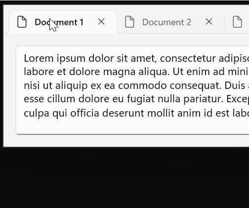
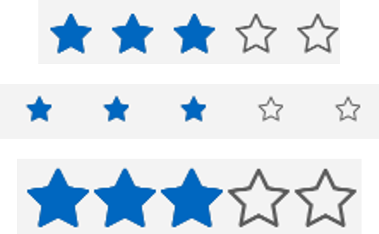

Stable channel release notes for the Windows App SDK 1.6
The stable channel provides releases of the Windows App SDK that are supported for use by apps in production environments. Apps that use the stable release of the Windows App SDK can also be published to the Microsoft Store.
Important links:
- If you'd like to upgrade an existing app from an older version of the Windows App SDK to a newer version, see Update existing projects to the latest release of the Windows App SDK.
Latest stable channel release:
Downloads for the Windows App SDK
Note
The Windows App SDK Visual Studio Extensions (VSIX) are no longer distributed as a separate download. They are available in the Visual Studio Marketplace inside Visual Studio.
Version 1.6.9 (1.6.250602001)
This is a servicing release of the Windows App SDK that includes critical bug fixes for the 1.6 release.
Bug Fixes
- Fixed a potential crash in WindowChrome::SetTitleBar when closing a window. For more info, see GitHub issue #9203.
Version 1.6.8 (1.6.250430001)
This is a servicing release of the Windows App SDK that includes critical bug fixes for the 1.6 release.
ApplicationData.MachinePath folder creation support
ApplicationData.MachineFolder is now easier to use on Windows >=10.0.26100.0 (Ge). Windows will create the Machine folder when a package manifesting opt-in support is added to a system if WinAppSDK 1.6.8 is present on the system. For more details see the ApplicationData spec.
Bug Fixes
- Fixed PackageDeploymentManager telemetry to properly capture when completion status. For more info, see GitHub issue #5297.
- Fixed a crash when using pen input on an x86 app.
- Fixed a potential crash if the window is already destroyed when WinUI is attempting to initialize for scrolling.
- Fixed the WINDOWSAPPSDK_RELEASE_PATCH define and Microsoft::WindowsAppSDK::Release::Patch values in WindowsAppSDK-VersionInfo.h to not always be 0. The define is now the yymmdd date of the build, and the Patch value is the mmdd date. This change provides better runtime information on the version being used without changing any variable sizes or the version scheme.
Version 1.6.7 (1.6.250402001)
This is a servicing release of the Windows App SDK that includes critical bug fixes for the 1.6 release.
- Improved the telemetry for failure scenarios in
WindowsAppRuntimeInstall-<arch>.exe. For more info, see GitHub issue #5291. - Fixed an issue where pointer input would stop working when using arrow keys at the same time. For more info, see GitHub issue #10126.
- Fixed an issue where apps in remote desktop stop responding to pointer input. For more info, see GitHub issue #10009. (This is the same fix as the pointer input plus arrow keys fix, due to remote desktop automatically sending some key input during the switch away and back.)
- Fixed a potential crash trying to restore focus if a window activation event is delivered for a window which is closing.
- Fixed a performance regression introduced in WinAppSDK 1.6 due to WinUI binaries missing some linker optimizations.
- Fixed a small performance issue when creating multiple WinUI windows/islands.
- Fixed a potential crash if
ProgressBar::SetProgressBarIndicatorWidthis called on a ProgressBar which is not in the tree. - Fixed a potential crash caused by
CPopup::EnsureBridgeClosedsometimes triggering reentrancy. - Fixed a potential crash when closing a popup due to
CUIElement::FlushPendingKeepVisibleOperationsusing a null children collection. - Fixed
PackageDeploymentManager.EnsurePackage*Readyto ensure version supersedence. For more info, see GitHub issue #5225.
Version 1.6.6 (1.6.250228001)
This is a servicing release of the Windows App SDK that includes critical bug fixes for the 1.6 release.
- Fixed an issue where a child window posting WM_NCMOUSELEAVE to the parent window would result in a loop that blocks new mouse input events.
- Fixed a crash which would occur on the next AppWindow.Changed event after a WebView2 process failure.
- Fixed a potential crash when using an Accessibility tool and closing a window.
- Fixed an issue where a textbox would not accept key input if given focus by clicking in the area of the clear button of the textbox. For more info, see GitHub issue #7703.
- Fixed an issue where a tooltip is not shown for the Minimize button in the titlebar when using
ExtendsContentIntoTitleBar=true. For more info, see GitHub issue #9149.
This release includes the following new APIs:
A new IsPlaceholderContent property on WidgetInfo and WidgetUpdateRequestOptions enables a Widget provider to indicate that it would display placeholder content if rendered. For example, a Widget that shows weather information should set IsPlaceholderContent to true if the user has not yet specified a weather location and the Widget is merely showing weather information for a default location like Seattle. When a Widget is marked as placeholder, certain hosts may decide to hide the Widget or prioritize other Widgets.
Microsoft.Windows.Widgets.Providers
WidgetInfo
IsPlaceholderContent
WidgetUpdateRequestOptions
IsPlaceholderContent
Version 1.6.5 (1.6.250205002)
This is a servicing release of the Windows App SDK that includes critical bug fixes for the 1.6 release.
- Fixed several memory leak issues.
Version 1.6.4 (1.6.250108002)
This is a servicing release of the Windows App SDK that includes critical bug fixes for the 1.6 release.
- Fixed an issue with text selection highlighting in a multi-line TextBox. For more info, see GitHub issue #9965.
- Fixed an issue where the DDLM package would sometimes not install, preventing launch of unpackaged apps. For more info, see GitHub issue #3855.
- Fixed a potential crash in Detours in some scenarios. For more info, see GitHub issue #4937.
- Fixed another potential issue where a menu off a CommandBar may incorrectly open up instead of down when the CommandBar is at the bottom of the window.
- Fixed a potential crash when running on older graphics hardware.
- Fixed a potential crash in pointer event handling when closing a window.
- Fixed a potential crash caused by
CUIAWindow::InitIdssometimes triggering reentrancy. - Fixed a potential crash when using
CompositionCapabilities.Changedevent. - Fixed an issue with some Unicode characters displaying as squares in TextBox/RichEditBox.
- Fixed
PackageDeploymentManager.EnsurePackage*Async()handling ofoptions.RegisterNewerIfAvailable. For more info, see GitHub issue #4864.
Version 1.6.3 (1.6.241114003)
This is a servicing release of the Windows App SDK that includes critical bug fixes for the 1.6 release.
- Fixed an issue where reading the
AppWindow.ExtendsContentIntoTitleBarproperty turns on custom titlebar rendering. For more info, see GitHub issue #9988. - Fixed a potential crash during destruction of a
TextBox/RichEditBox. For more info, see GitHub issue #9070. - Fixed an issue where
PackageDeploymentManager.IsPackageReadyOrNewerAvailable()failed. For more info, see GitHub issue #4817. - Fixed an issue where
ScrollViewerwould leak. - Added detection for a rare scenario where the app stops rendering and never recovers.
- Fixed an issue where
PackageDeploymentManager.RegisterPackageSetAsync()requires URI when it should be optional to register by PackageFamilyName. - Fixed an issue that prevented apps from being installed or uninstalled. For more info, see GitHub issue #4881.
This release includes the following new APIs which allow for providers of Widgets to incorporate web content in their Widgets:
Microsoft.Windows.Widgets.Providers
IWidgetManager2
IWidgetProviderMessage
IWidgetResourceProvider
WidgetManager
SendMessageToContent
WidgetMessageReceivedArgs
WidgetResourceRequest
WidgetResourceRequestedArgs
WidgetResourceResponse
Version 1.6.1 (1.6.240923002)
This is a servicing release of the Windows App SDK that includes critical bug fixes for the 1.6 release.
- Fixed a crash when using FocusVisualKind.Reveal(). For more info, see GitHub issue #9966.
- Fixed noisy C++ exceptions from Bcp47Langs.dll. For more info, see GitHub issue #4691. Note that this fix removes the synchronization with
Windows.Globalization.ApplicationLanguages.PrimaryLanguageOverride. - Fixed an issue where an extra
Unloadedevent was raised immediately after showing aContentDialog. For more info, see GitHub issue #8402. - Fixed an issue where a CommandBar menu might have incorrectly opened up even when there was room for it to open down.
- Fixed some issues where input to
InputNonClientPointerSourceregions was not handled correctly when the top-level window was running in right-to-left mode. - Fixed the compile-time check for the Windows SDK framework version to handle the slightly different framework name used for .NET 9.
Version 1.6
The following sections describe new and updated features and known issues for version 1.6.
In an existing Windows App SDK 1.5 app, you can update your Nuget package to 1.6.240829007 (see the Update a package section in Install and manage packages in Visual Studio using the NuGet Package Manager).
For the updated runtime and MSIX, see Downloads for the Windows App SDK.
Required project changes for 1.6
C++ project changes
When updating a C++ project to 1.6, you'll need to add a project reference to the Microsoft.Web.WebView2 package. If you update via NuGet Package Manager in Visual Studio, this dependency will be added for you.
C# project changes
In 1.6, Windows App SDK managed apps require Microsoft.Windows.SDK.NET.Ref *.*.*.38 or later, which can be specified via WindowsSdkPackageVersion in your csproj file. For example:
<Project Sdk="Microsoft.NET.Sdk">
<PropertyGroup>
<OutputType>WinExe</OutputType>
<TargetFramework>net8.0-windows10.0.22621.0</TargetFramework>
<TargetPlatformMinVersion>10.0.17763.0</TargetPlatformMinVersion>
<WindowsSdkPackageVersion>10.0.22621.38</WindowsSdkPackageVersion>
<PropertyGroup>
...
In addition, Windows App SDK managed apps should update to Microsoft.Windows.CsWinRT 2.1.1 (or later).
Note
These manual references will no longer be needed once the next .NET SDK servicing update is released.
Native AOT support
The .NET PublishAot project property is now supported for native Ahead-Of-Time compilation. For details on Native AOT, see Native AOT Deployment. Because AOT builds on Trimming support, much of the following trimming-related guidance applies to AOT as well.
For PublishAot support and trimming support, in addition to the C# project changes described in the previous section you'll also need a package reference to Microsoft.Windows.CsWinRT 2.1.1 (or later) to enable the source generator from that package until the next .NET SDK servicing update is released when it will no longer be required.
For more info, see the CsWinRT Trimming / AOT support doc and the CsWinRT 2.1.1 Release Notes.
Because the Windows App SDK invokes publishing targets when F5 deploying, we recommend enabling PublishAot at NuGet restore time by adding this to your csproj file:
<PublishAot>true</PublishAot>
Resolving AOT Issues
In this release, the developer is responsible for ensuring that all types are properly rooted to avoid trimming (such as with reflection-based {Binding} targets). Later releases will enhance both C#/WinRT and the XAML Compiler to automate rooting where possible, alert developers to trimming risks, and provide mechanisms to resolve.
Partial Classes
C#/WinRT also includes PublishAot support in version 2.1.1. To enable a class for AOT publishing with C#/WinRT, it must first be marked partial. This allows the C#/WinRT AOT source analyzer to attribute the classes for static analysis. Only classes (which contain methods, the targets of trimming) require this attribute.
Unsafe Code Error
The CsWinRT source generator might generate code that makes use of unsafe. If you hit such an error during compilation or a diagnostic warning for it (CS0227 for "Unsafe code may only appear if compiling with /unsafe"), you should set EnableUnsafeBlocks to true. For more info, see GitHub issue CsWinRT #1721.
WebView2 not yet AOT compatible
The WebView2 projections in Microsoft.Web.WebView2 package version 1.0.2651.64 are not yet AOT compatible. This will be fixed in an upcoming release of the Microsoft.Web.WebView2 package, which you can then reference in your project.
Reflection-Free Techniques
To enable AOT compatibility, reflection-based techniques should be replaced with statically typed serialization, AppContext.BaseDirectory, typeof(), etc. For details, see Introduction to trim warnings.
Rooting Types
Until full support for {Binding} is implemented, types may be preserved from trimming as follows:
Given project P consuming assembly A with type T in namespace N, which is only dynamically referenced (so normally trimmed), T can be preserved via:
P.csproj:
<ItemGroup>
<TrimmerRootDescriptor Include="ILLink.Descriptors.xml" />
</ItemGroup>
ILLink.Descriptors.xml:
<?xml version="1.0" encoding="utf-8"?>
<linker>
<assembly fullname="A">
<type fullname="N.T" preserve="all" />
</assembly>
</linker>
For complete root descriptor XML expression syntax, see Root Descriptors.
Note
Dependency packages that have not yet adopted AOT support may exhibit runtime issues.
Decoupled WebView2 versioning
The Windows App SDK now consumes the Edge WebView2 SDK as a NuGet reference rather than embedding a hardcoded version of the Edge WebView2 SDK. The new model allows apps to choose a newer version of the Microsoft.Web.WebView2 package instead of being limited to the version with which the Windows App SDK was built. The new model also allows apps to reference NuGet packages which also reference the Edge WebView2 SDK. For more info, see GitHub issue #5689.
New Package Deployment APIs
The Package Management API has received several enhancements including Is*ReadyOrNewerAvailable*(), EnsureReadyOptions.RegisterNewerIfAvailable, Is*Provisioned*(), IsPackageRegistrationPending(), and several bug fixes. See PackageManagement.md and Pull Request #4453 for more details.
Improved TabView tab tear-out

TabView supports a new CanTearOutTabs mode which provides an enhanced experience for dragging tabs and dragging out to a new window. When this new option is enabled, tab dragging is very much like the tab drag experience in Edge and Chrome where a new window is immediately created during the drag, allowing the user to drag it to the edge of the screen to maximize or snap the window in one smooth motion. This implementation also doesn't use drag-and-drop APIs, so it isn't impacted by any limitations in those APIs. Notably, tab tear-out is supported in processes running elevated as Administrator.
Other notable changes
- Added a new
ColorHelper.ToDisplayName()API, filling that gap from UWP. - Added a new
Microsoft.Windows.Globalization.ApplicationLanguagesclass, which notably includes a newPrimaryLanguageOverridefeature. For more info, see GitHub issue #4523. - Unsealed
ItemsWrapGrid. This should be a backward-compatible change. PipsPagersupports a new mode where it can wrap between the first and last items.
RatingControlis now more customizable, by moving some hard-coded style properties to theme resources. This allows apps to override these values to better customize the appearance of RatingControl.

- WinUI 3 has changed to the typographic model for font selection rather than the legacy weight/stretch/style model. The typographic model is required for some newer fonts, including Segoe UI Variable, and enables enhanced font capabilities. Some older fonts which rely on the weight/stretch/style model for selection may not be found with the typographic model.
Known Issues
- If the debugger is set to break on all C++ exceptions, it will break on some noisy exceptions on start-up in the BCP47 (Windows Globalization) code. For more info, see GitHub issue #4691.
- Component library packages which reference the WinAppSDK 1.6 package will not correctly get the referenced WebView2 package contents. For more info, see WebView2Feedback #4743. A workaround is to add a direct reference to the
Microsoft.Web.WebView2package where needed. - Apps compiled with Native AOT might sometimes experience a hanging issue after page navigation due to a race condition in the .NET runtime's GC thread. For more info, see .NET issue #104582.
- The initial release of 1.6.0 introduced an issue with one of our dependencies that we expect will be resolved in an upcoming release of the .NET SDK. If you experience an error with the version of your Microsoft.Windows.SDK.NET reference, you’ll need to explicitly reference the version of the .NET SDK that is specified by your error message. For example, if the error says you need version 10.0.19041.38, add the following to your
.csprojfile:<WindowsSdkPackageVersion>10.0.19041.38</WindowsSdkPackageVersion>.
Bug Fixes
- Fixed a crash when setting
InfoBar.IsOpenin .xaml. For more info, see GitHub issue #8391. - Fixed an issue where HTML elements would lose pointer capture when the mouse moved outside of the
WebView2bounds. For more info, see GitHub issue #8677. - Fixed an issue where drag and drop into a flyout with
ShouldConstrainToRootBounds=falsedid not work. For more info, see GitHub issue #9276. - Fixed an issue where
ms-appx://references did not work whenPublishSingleFileis enabled. For more info, see GitHub issue #9468. - Fixed an issue where debugger symbols weren't working correctly for some binaries. For more info, see GitHub issue #4633.
- Fixed a potential crash when subclassing
NavigationView. - Fixed an issue where table borders in a
RichEditBoxwould not correctly erase when scrolling or reducing the size of the table. - Fixed an issue where flyouts from
MediaTransportControlshad a fully transparent background. - Fixed an issue where dragging into a WebView2 would fail or drop in the wrong location on display scale factors other than 100% or when system text scaling is enabled.
- Fixed an issue where
TextBox/RichEditBoxwould not announce to Accessibility tools when input is blocked due to being at theMaxLengthlimit. - Fixed a few issues around handling of custom titlebar scenarios. For more info, see GitHub issues #7629, #9670, #9709 and #8431.
- Fixed an issue where
InfoBadgeicon was not visible. For more info, see GitHub issue #8176. - Fixed an issue with icons sometimes showing in the wrong position in
CommandBarFlyout. For more info, see GitHub issue #9409. - Fixed an issue with keyboard focus in menus when opening or closing a sub menu. For more info, see GitHub issue #9519.
- Fixed an issue with
TreeViewusing the incorrectIsExpandedstate when recycling items. For more info, see GitHub issue #9549. - Fixed an issue when using an ElementName binding in an
ItemsRepeater.ItemTemplate. For more info, see GitHub issue #9715. - Fixed an issue with the first item in an
ItemsRepeatersometimes having an incorrect position. For more info, see GitHub issue #9743. - Fixed an issue with
InputNonClientPointerSourcesometimes breaking input to the min/max/close buttons. For more info, see GitHub issue #9749. - Fixed a compile error when using Microsoft.UI.Interop.h with clang-cl. For more info, see GitHub issue #9771.
- Fixed an issue where the
CharacterReceivedevent was not working inComboBox/TextBox. For more info, see GitHub issue #9786. - Fixed an issue where duplicate
KeyUpevents were raised for arrow and tab keys. For more info, see GitHub issue #9399. - Fixed an issue where the
PowerManager.SystemSuspendStatusChangedevent was unusable to get theSystemSuspendStatus. For more info, see GitHub issue #2833. - Fixed an issue where initial keyboard focus was not correctly given to a
WebView2when that was the only control in the window. - Fixed an issue when using
ExtendsContentIntoTitleBar=truewhere the Min/Max/Close buttons did not correctly appear in the UI Automation, which prevented Voice Access from showing numbers for those buttons. - Fixed an issue where an app might crash in a lock check due to unexpected reentrancy.
- Fixed an issue where
Hyperlinkcolors did not correctly update when switching into a high contrast theme. - Fixed an issue where changing the collection of a
ListViewin a background window may incorrectly move that window to the foreground and take focus. - Fixed an issue where calling
ItemsRepeater.StartBringIntoViewcould sometimes cause items to disappear. - Fixed an issue where touching and dragging on a
Buttonin aScrollViewerwould leave it in a pressed state. - Updated IntelliSense, which was missing information for many newer types and members.
- Fixed an issue where clicking in an empty area of a
ScrollViewerwould always move focus to the first focusable control in theScrollViewerand scroll that control into view. For more info, see GitHub issue #597. - Fixed an issue where the
Window.Activatedevent sometimes fired multiple times. For more info, see GitHub issue #7343. - Fixed an issue where setting the
NavigationViewItem.IsSelectedproperty totrueprevented its children from showing when expanded. For more info, see GitHub issue #7930. - Fixed an issue where
MediaPlayerElementwould not properly display captions withNoneorDropShadowedge effects. For more info, see GitHub issue #7981. - Fixed an issue where the
Flyout.ShowModeproperty was not used when showing the flyout. For more info, see GitHub issue #7987. - Fixed an issue where
NumberBoxwould sometimes have rounding errors. For more info, see GitHub issue #8780. - Fixed an issue where using a library compiled against an older version of WinAppSDK could hit an error trying to find a type or property. For more info, see GitHub issue #8810.
- Fixed an issue where initial keyboard focus was not set when launching a window. For more info, see GitHub issue #8816.
- Fixed an issue where
FlyoutShowMode.TransientWithDismissOnPointerMoveAwaydidn't work after the first time it was shown. For more info, see GitHub issue #8896. - Fixed an issue where some controls did not correctly template bind
ForegroundandBackgroundproperties. For more info, see GitHub issue #7070, #9020, #9029, #9083 and #9102. - Fixed an issue where
ThemeResources used inVisualStateManagersetters wouldn't update on theme change. This commonly affected controls in flyouts. For more info, see GitHub issue #9198. - Fixed an issue where
WebViewwould lose key focus, resulting in extra blur/focus events and other issues. For more info, see GitHub issue #9288. - Fixed an issue where
NavigationViewcould show a binding error in debug output. For more info, see GitHub issue #9384. - Fixed an issue where SVG files defining a negative viewbox no longer rendered. For more info, see GitHub issue #9415.
- Fixed an issue where changing
ItemsView.Layoutorientation caused an item to be removed. For more info, see GitHub issue #9422. - Fixed an issue where scrolling a
ScrollViewgenerated a lot of debug output. For more info, see GitHub issue #9434. - Fixed an issue where
MapContorl.InteractiveControlsVisibledid not work properly. For more info, see GitHub issue #9486. - Fixed an issue where
MapControl.MapElementClickevent didn't properly fire. For more info, see GitHub issue #9487. - Fixed an issue where x:Bind didn't check for null before using a weak reference, which could result in a crash. For more info, see GitHub issue #9551.
- Fixed an issue where changing the
TeachingTip.Targetproperty didn't correctly update its position. For more info, see GitHub issue #9553. - Fixed an issue where dropdowns did not respond in WebView2. For more info, see GitHub issue #9566.
- Fixed a memory leak when using
GeometryGroup. For more info, see GitHub issue #9578. - Fixed an issue where scrolling through a very large number of items from an
ItemRepeaterin aScrollViewcould cause blank render frames. For more info, see GitHub issue #9643. - Fixed an issue where
SceneVisualwasn't working.
New APIs in 1.6.0
Version 1.6.0 includes the following new APIs compared to the stable 1.5 release:
Microsoft.UI
ColorHelper
ToDisplayName
Microsoft.UI.Input
EnteredMoveSizeEventArgs
EnteringMoveSizeEventArgs
ExitedMoveSizeEventArgs
InputNonClientPointerSource
EnteredMoveSize
EnteringMoveSize
ExitedMoveSize
WindowRectChanged
WindowRectChanging
MoveSizeOperation
WindowRectChangedEventArgs
WindowRectChangingEventArgs
Microsoft.UI.Xaml
XamlRoot
CoordinateConverter
Microsoft.UI.Xaml.Automation.Peers
ScrollPresenterAutomationPeer
Microsoft.UI.Xaml.Controls
PipsPager
WrapMode
WrapModeProperty
PipsPagerWrapMode
TabView
CanTearOutTabs
CanTearOutTabsProperty
ExternalTornOutTabsDropped
ExternalTornOutTabsDropping
TabTearOutRequested
TabTearOutWindowRequested
TabViewExternalTornOutTabsDroppedEventArgs
TabViewExternalTornOutTabsDroppingEventArgs
TabViewTabTearOutRequestedEventArgs
TabViewTabTearOutWindowRequestedEventArgs
Microsoft.Windows.Globalization
ApplicationLanguages
Microsoft.Windows.Management.Deployment
EnsureReadyOptions
RegisterNewerIfAvailable
PackageDeploymentFeature
PackageDeploymentManager
IsPackageDeploymentFeatureSupported
IsPackageProvisioned
IsPackageProvisionedByUri
IsPackageReadyOrNewerAvailable
IsPackageReadyOrNewerAvailableByUri
IsPackageSetProvisioned
IsPackageSetReadyOrNewerAvailable
PackageReadyOrNewerAvailableStatus
Microsoft.Windows.Storage
ApplicationData
ApplicationDataContainer
ApplicationDataContract
ApplicationDataCreateDisposition
ApplicationDataLocality